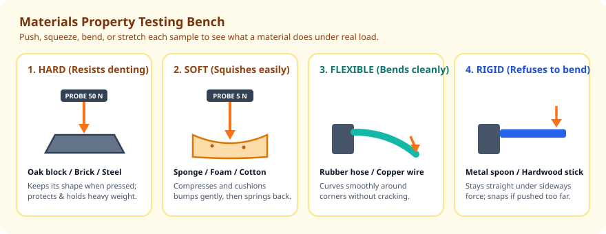
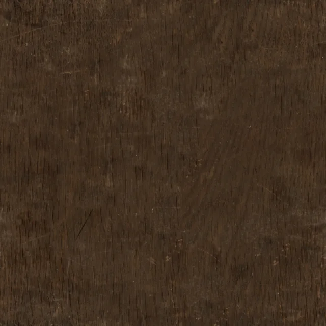
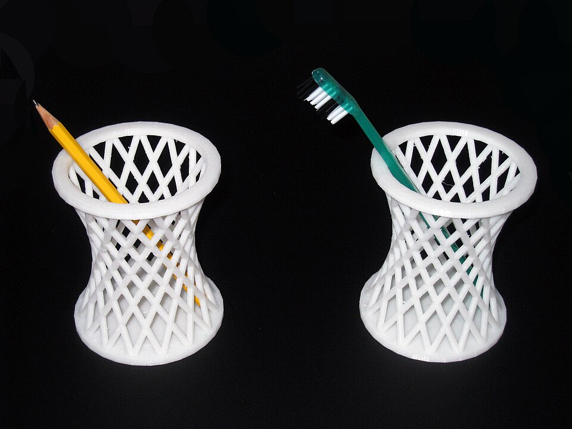

Materials Sort
Engineers do not choose materials by guessing. They make a prediction, test one property at a time, and use the evidence to choose what to build with. In this mini lab, you will test everyday objects and defend your choices.
"See, I have called by name Bezalel... and I have filled him with the Spirit of God, with ability and intelligence, with knowledge and all craftsmanship."
— Exodus 31:2–3
What Is a Material Property?
A property is something you can notice or test about a material — without breaking it or changing what it's made of. Builders, engineers, and inventors check properties before they choose what to use.
Hard
Keeps its shape when you press on it.
Soft
Squishes in when you press on it.
Bendy
Curves or folds without snapping.
Stiff
Stays straight — it fights back against bending.
Does it keep its shape?
1. Predict. Choose an object. 2. Test. If you have the real object, press it gently first; then run the on-screen test. 3. Explain. Record what the evidence says.
Which material solves the problem?
Be an engineer: read the job, predict which property matters, then choose the material that gives the best evidence-based fit.
Use the bend test as your evidence.
Why Builders Care About Properties
Picking the right material is one of the first jobs in fabrication — the craft of building real things. If you got every choice backwards, building would go very wrong!
A House
Needs hard, stiff walls (brick or wood) — not soft, bendy ones!
A Pillow
Needs soft filling — a hard, stiff pillow wouldn't be comfortable at all.
Shoelaces
Need to be bendy so you can tie them into a knot.
A Ruler
Needs to be stiff so it draws perfectly straight lines.



Words to Know
Material
The stuff something is made of — wood, metal, cloth, plastic, or glass.
Property
Something you can notice or test about a material, like how hard or bendy it is.
Hard & Soft
Hard keeps its shape when pressed. Soft squishes in.
Bendy & Stiff
Bendy curves without breaking. Stiff resists bending and stays straight.
Fabrication
The craft of building real things by hand or with tools.
Engineer
Someone who picks the right materials and shapes them to solve a problem.
Quick Check
Read each question aloud together, then pick the best answer.
1. Which of these is soft?
2. What does "stiff" mean?
3. Why do shoelaces need to be bendy?
4. A "property" is...
5. A house's walls should be...
Wonder and Reflection: Made on Purpose
Every material has its own set of properties, and no one property is "better" than another — a soft pillow and a stiff ruler are both exactly right for their jobs. Part of being a good builder is learning to notice what a material can do, and choosing it on purpose.
The Bible tells us that when God's people needed skilled builders for the Tabernacle, He filled Bezalel with wisdom for exactly this kind of work — knowing materials, shaping them well, and using craftsmanship for a good purpose. When you sort a soft pillow from a stiff ruler, you're practicing the very first steps of that same kind of careful, purposeful making.
"Whatever you do, work heartily, as for the Lord and not for men."
— Colossians 3:23
Summary: What We Learned
- A property is something you can notice or test about a material — like how hard or bendy it is.
- Hard materials keep their shape when pressed; soft materials squish in.
- Bendy materials curve without breaking; stiff materials resist bending.
- Builders choose materials on purpose — a pillow needs to be soft, a ruler needs to be stiff.
- This is the first step toward fabrication — the craft of building real things.